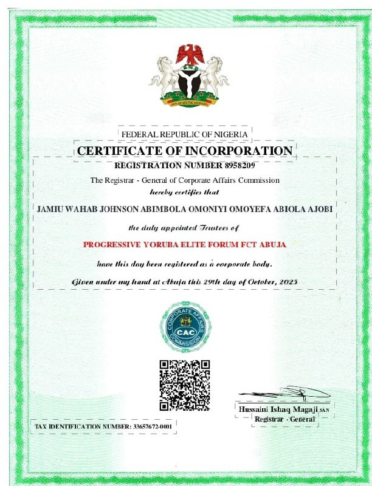

PROGRESSIVE Yorùbá ELITE FORUM
Motto: ísòkan Ọse kọkọ
INTRODUCTION
The above - mentioned association was established on 6th May, 2023 in FCT Abuja with a view to render humanitterian and social services to the public
Registered under Part F of the Company and Allied Matters Act (CAMA 2020) in the Corporate Affairs Commission (CAC) with REGISTRATION NUMBER:8958209.

OBJECTIVES
- To promote the cultural value of Yoruba ethnicity
- To collectively add value and impact the living standard of members
- To contribute our Quota in various areas of endeavors to the development of the community and the country at large
ACHIEVEMENT
- Creation of job opportunities for members
- Provision of Medicare to the community
- Reaching out to widows and widowers
- Adequate provisions of commodities for the less privileged in the society.